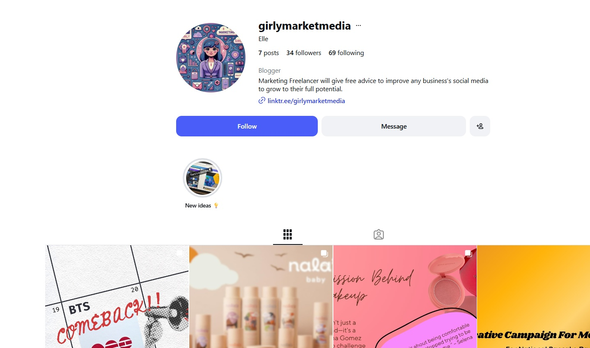
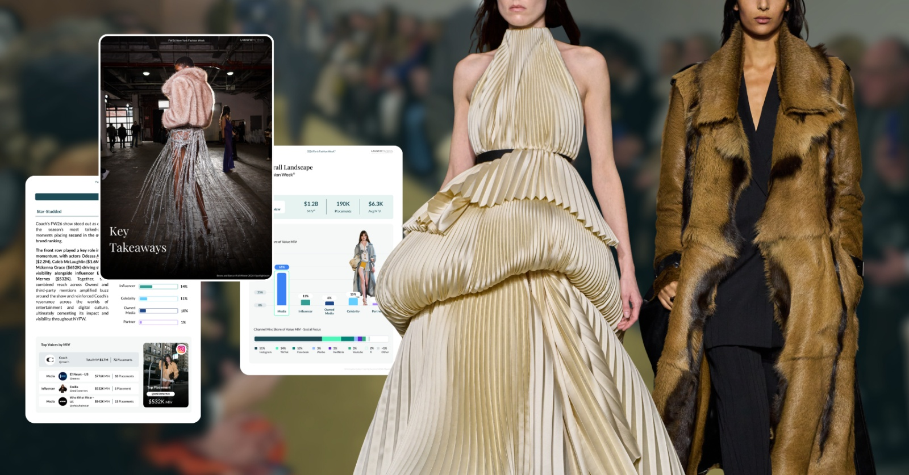
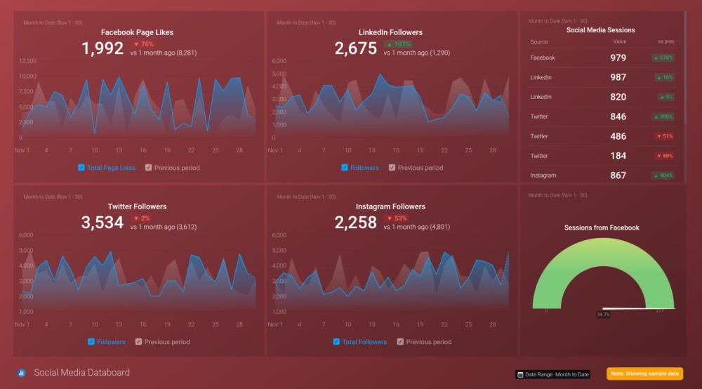
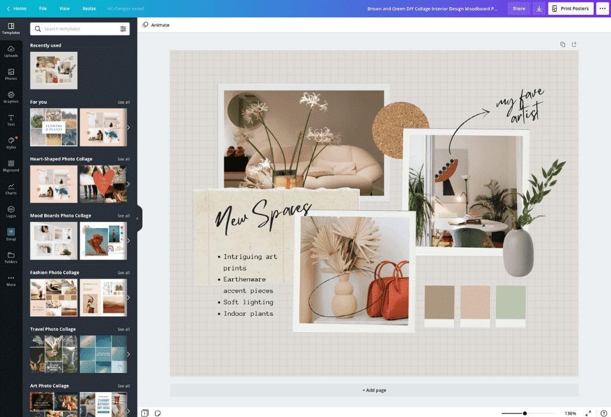
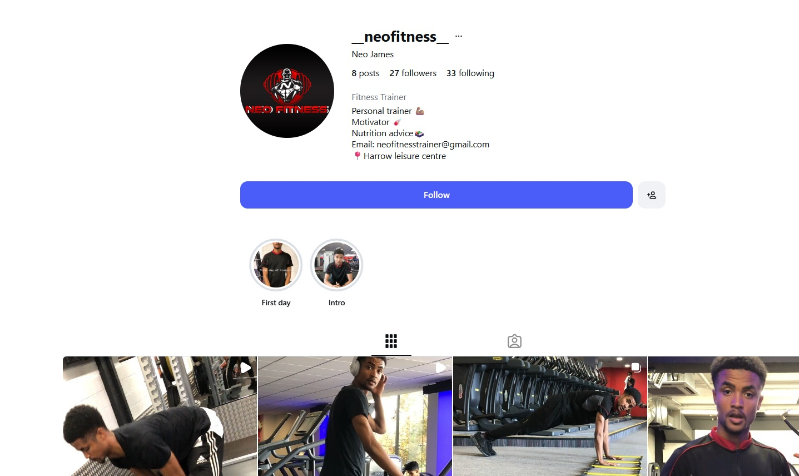
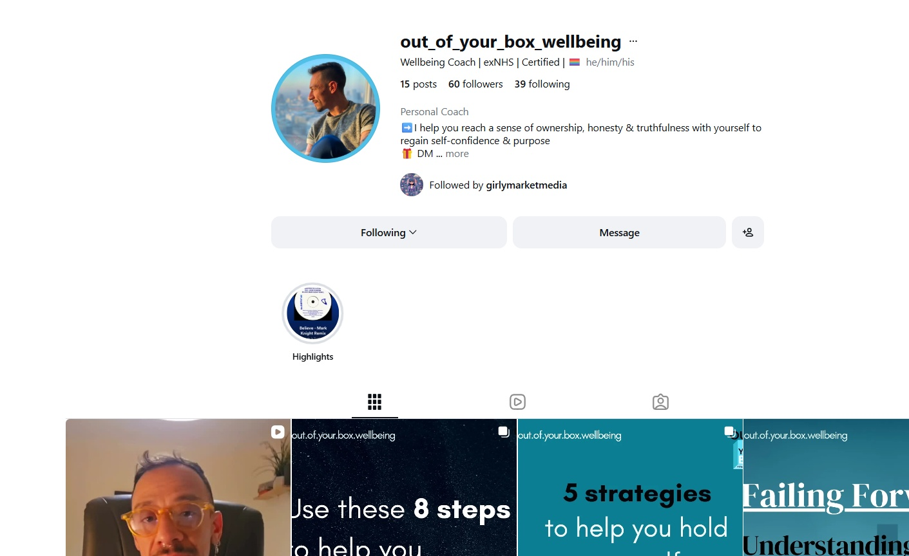
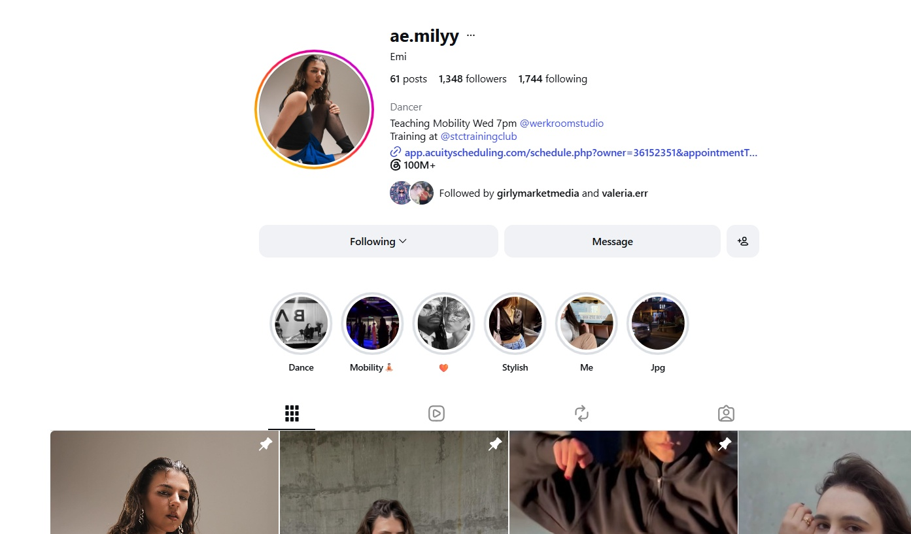
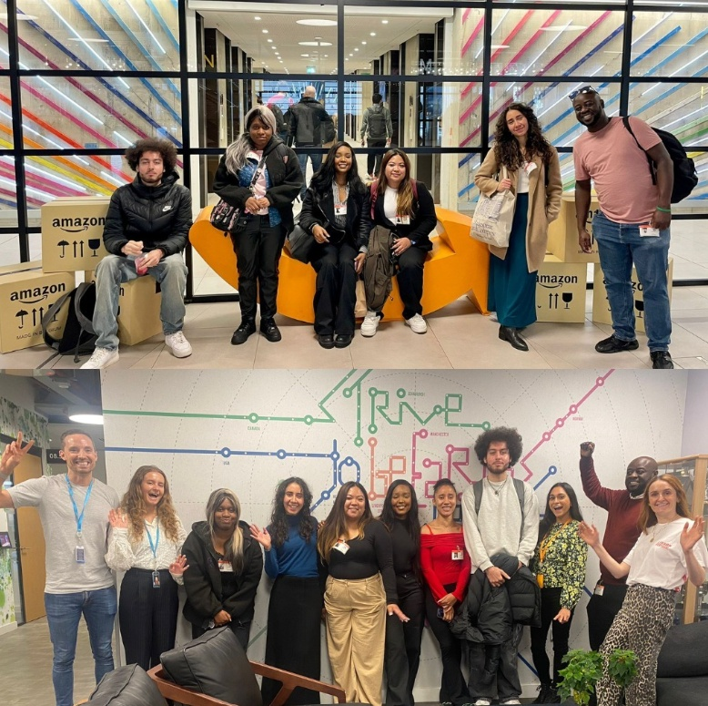
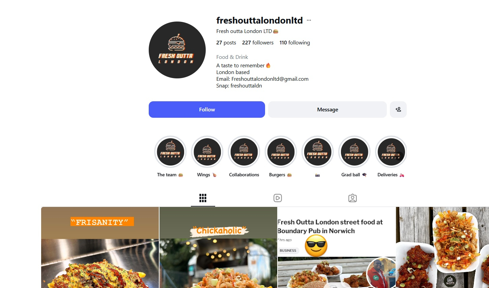

GirlyMarketMedia
@girlymarketmedia
Built and manage a marketing content platform that turns campaigns, trends and brand activity into clear, visual insights.
view work →
planning & strategy


collaboration that creates impact ♡
customer success • campaign insights • influencer marketing
〽 ♡Customer Success and Insights professional supporting fashion, beauty and luxury campaigns.
Excel • HubSpot • Campaign Reporting • Client Coordination
projects showing strategy, delivery and results ↙

@girlymarketmedia
Built and manage a marketing content platform that turns campaigns, trends and brand activity into clear, visual insights.
view work →
@__neofitness__
Developed clearer positioning, content pillars and social direction for a performance-focused personal trainer.
view work →
@out_of_your_box_wellbeing
Reviewed audience needs and refined messaging, content themes and platform direction for a wellbeing coach.
view work →
@ae.milyy
Created a structured content plan and clearer visual direction to improve consistency and non-follower awareness.
view work →campaign thinking, contribution and results ↙

Media Trust mentorship team
Contributed research, audience thinking and pitch support to a cross-platform Amazon Ads response for Call of Duty: Black Ops 6.

@freshouttalondonltd
Created social content and supported university outreach, helping the page reach 150 followers and secure four society partnerships.
Reviewed brand visibility, creator impact and high-performing content across seasonal fashion moments.
Supported analysis of talent impact, audience response, campaign resonance and luxury-brand visibility.
Reviewed social conversation, sentiment themes and standout brand moments.
Analysed engagement, reach, EMV, creator performance and content trends for client-ready reporting.
hi, i'm Elle ♡
I’m a London-based Customer Success and Insights professional with experience supporting influencer campaigns, client reporting and cross-functional delivery for fashion, beauty and luxury brands.
I use Excel, HubSpot and clear communication to turn campaign data into practical recommendations, organised workflows and client-ready presentations.
open to Customer Success, Client Services and Insights roles ♡
Let’s discuss how I can support your clients and campaigns ♡
inLinkedInconnect → ▤CV / Resumeview → ✉Emailemail me →